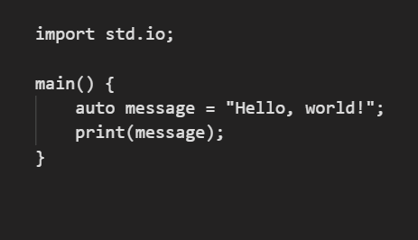
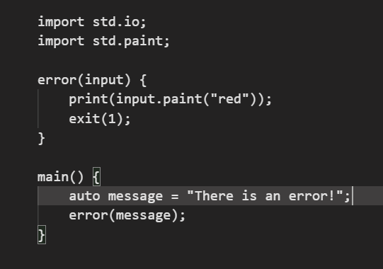

This Lumix code opens a main entry to the program and then creates a variable called greeting, then logs its value.
This Lumix code opens a main entry and creates a function called error to generate errors with the color red to make it look like an error also it exit's the main entry to make the program stop.
Lumix. The ultimate programming language the world has seen!
Lumix strives to be a top-tier programming language, prioritizing high performance and developer satisfaction. With a focus on efficiency and elegant syntax, Lumix aims to provide a streamlined experience for programmers. Our commitment to excellence drives us to constantly refine and enhance the language, ensuring that developers have a tool that is not only powerful but also a joy to work with.
Another pivotal goal for Lumix is to furnish developers with a comprehensive array of libraries, enriching their toolkit and simplifying the development process. By providing an extensive set of libraries, Lumix aims to empower developers with ready-made solutions, enabling them to expedite their projects and focus on building innovative functionalities. This commitment to a rich library ecosystem underscores Lumix's dedication to making development not only efficient but also highly versatile and adaptable to various application needs.
Lumix acknowledges the significance of fostering a lively and engaged community around its platform. Cultivating a strong sense of collaboration and knowledge-sharing is a key priority. Lumix aims to create an inclusive space where developers can connect, exchange ideas, and collectively contribute to the growth of the language. This commitment to community involvement underscores Lumix's belief that a thriving community is instrumental in the continual evolution and improvement of the language.
Security stands as a paramount concern in contemporary software development within the Lumix ecosystem. Recognizing the ever-growing importance of safeguarding digital assets and user data, Lumix places a high priority on implementing robust security measures. By adhering to best practices and staying vigilant against emerging threats, Lumix is committed to providing a secure environment for developers to build applications with confidence. This commitment reflects Lumix's dedication to ensuring the integrity and trustworthiness of the software developed within its framework.
Lumix distinguishes itself by presenting a unique proposition—it seamlessly combines both high and low-level programming capabilities. This dual nature allows developers to harness the power of low-level optimizations while benefiting from the expressiveness and ease of use associated with high-level languages. Lumix's versatility bridges the gap between intricate system-level operations and the simplicity desired in application-level development. This distinctive feature positions Lumix as an innovative language that caters to a wide spectrum of programming needs, making it a valuable choice for developers seeking flexibility and efficiency in their projects.
Lumix is a programming language that is compiled and that can be interpreted by certain "compilers". This feature makes Lumix more available and more easy to use.
To install Lumix, click the button below:
Lumix is a modern programming language designed for simplicity and efficiency. It provides a clean syntax and powerful features, making it suitable for a wide range of applications. Lumix aims to enhance the development experience and promote readability in code.